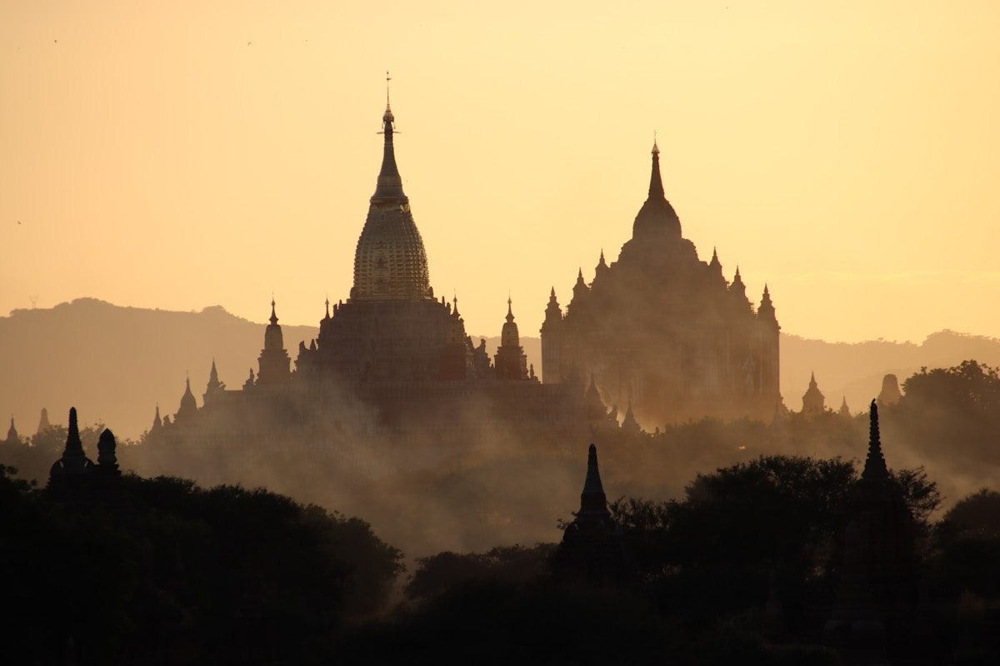
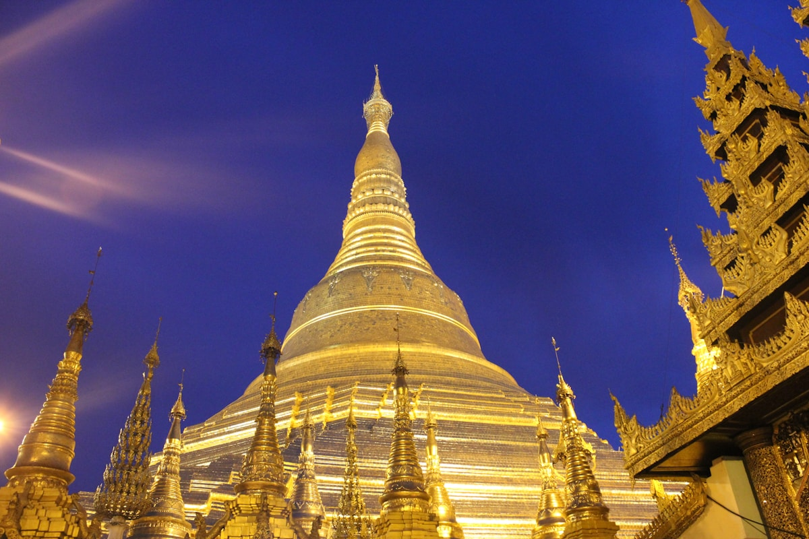
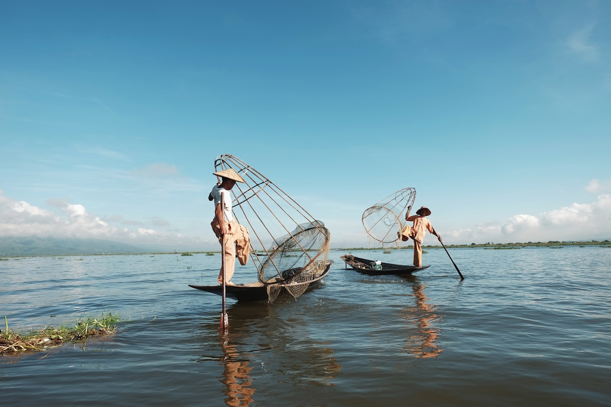
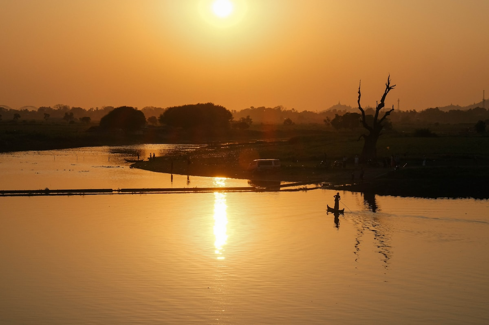
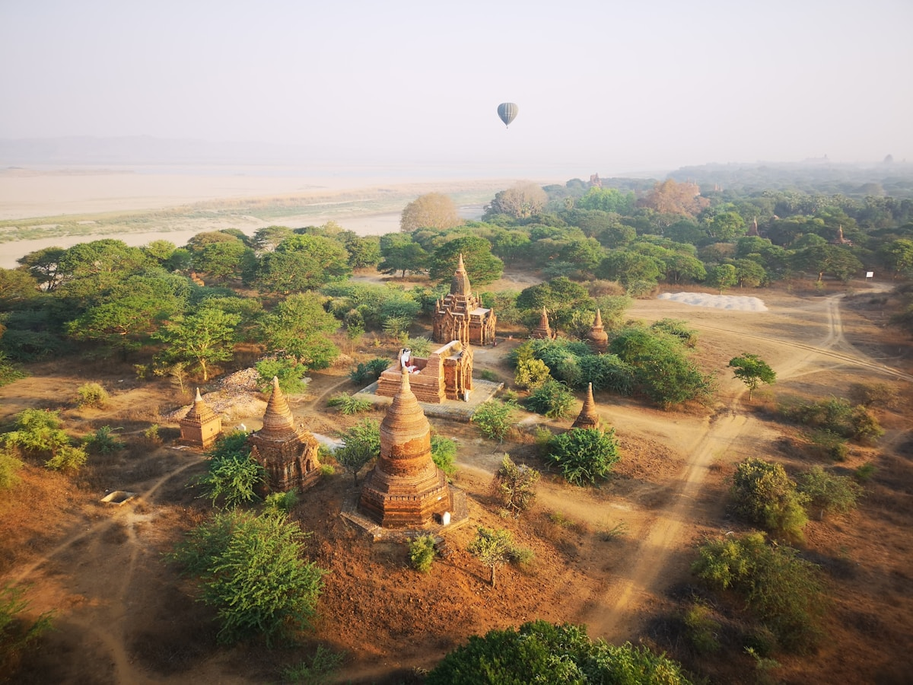
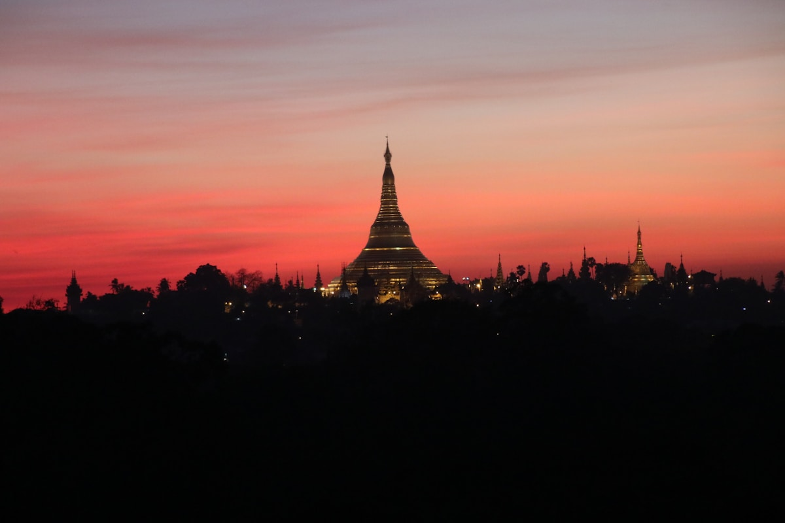
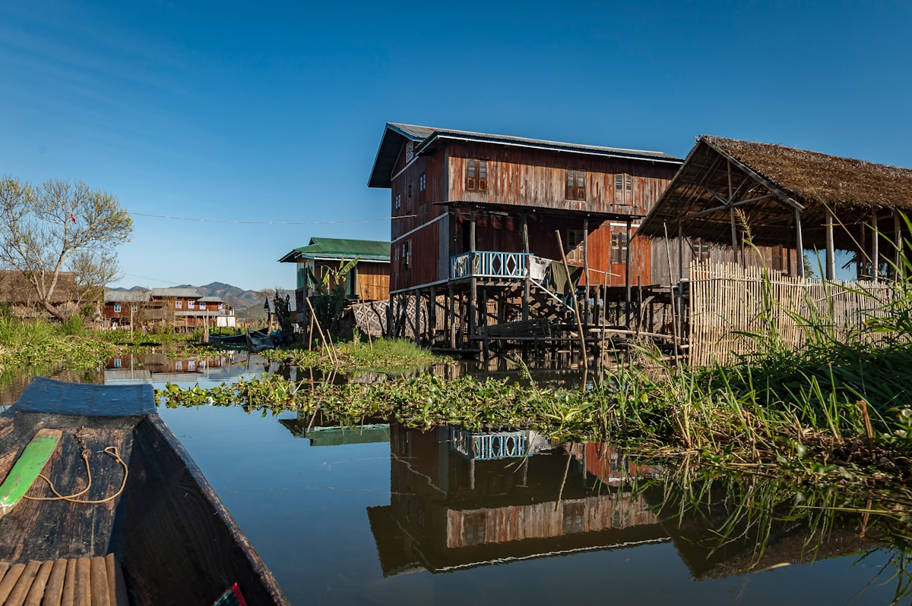
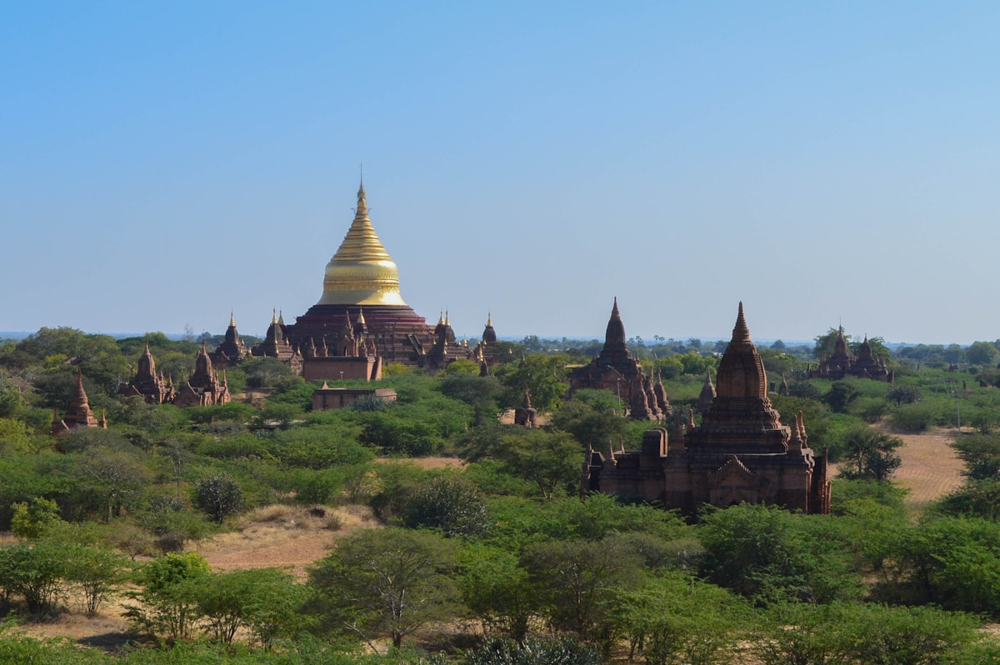

| 事项 | 结论 |
|---|---|
| 事项 | 结论 |
| 签证（最关键） | 中国护照办旅游电子签证 e-Visa（约 50 美元，停留 28 天），官网 evisa.moip.gov.mm 在线申请，约 3 个工作日批出，90 天有效，支持支付宝付款 |
| 推荐方案 | 仰光 2 天 → 蒲甘 3 天 → 曼德勒 2 天 → 茵莱湖 2 天 → 返程 1 天 |
| 返程约束 | 第 10 天从茵莱湖海霍机场飞回仰光转机返京；返程段国内航班需提前 2 周订 |
| 行程链 | 仰光 → 蒲甘 → 曼德勒 → 茵莱湖（黑河/海霍机场） |
| 预算（人均） | 经济 10000–16000 ／ 标准 18000–28000 ／ 舒适 40000–60000（人民币） |
| 三件提前事 | ① 办 e-Visa ② 订境内航班（蒲甘段）③ 凉季 11–2 月锁定蒲甘日出热气球 |
| 季节提醒 | 凉季（11–2 月）晴朗干燥最佳；3–5 月热季 40℃+，6–10 月雨季泥泞 |
| 支付 | 缅币现金为主（1 元 ≈ 460 缅币），大城市少量 ATM，备美元零钱 |
以下为 10 天 9 晚的推荐节奏：按「仰光—中—北—高原」推进，城市之间以境内航班（约 1 小时）为主，大巴/船为备选。每日主景点 ≤2 个，蒲甘 3 天足够看日出日落与热气球。
| 日期 | 行程 | 过夜地 | 主题 |
|---|---|---|---|
| D1 抵仰光 | 北京✈仰光（约 5h 直飞），入住市中心，傍晚瑞光大金塔看夜景 | 仰光 | 抵达+金塔 |
| D2 | 瑞光大金塔 → 乔达基卧佛寺 → 皇家湖卡拉威宫 → 唐人街夜市 | 仰光 | 佛国名片 |
| D3 | 仰光✈蒲甘（约 1h10min），入住良乌/老蒲甘，下午瑞喜宫塔+马车巡游 | 蒲甘 | 飞入万塔 |
| D4 | 瑞山陀塔日出 → 阿南达寺 → 达玛央吉寺 → 伊洛瓦底江日落 | 蒲甘 | 塔林经典 |
| D5 | 热气球日出（可选）→ 波巴山一日 或 佛塔骑行+新蒲甘市集 | 蒲甘 | 气球/火山 |
| D6 | 蒲甘✈曼德勒（约 20min），因瓦古城 → 曼德勒山日落 | 曼德勒 | 古都慢游 |
| D7 | 乌本桥日出 → 马哈伽纳扬僧院千人僧饭 → 固都陶佛塔 → 敏贡古城 | 曼德勒 | 柚木与僧饭 |
| D8 | 曼德勒✈海霍 → 娘水镇，茵莱湖包船游：水上浮田、跳猫寺 | 茵莱湖 | 高原水乡 |
| D9 | 彭都奥佛塔 → 伊瓦玛水上市场 → 单脚划船捕鱼 → 茵汀村古塔群 | 茵莱湖 | 湖上人家 |
| D10 返程 | 海霍✈仰光转机✈北京（直飞约 5h），到家休息 | — | 收尾 |
以下为 10 天全程的逐小时执行时间线，可当作「当天打开照着走」的清单。标注 ※ 的可选项视体力与天气取舍。
| 时间 | 事项 |
|---|---|
| 14:40–20:20 | 北京首都 T3✈仰光国际（国航 CA905，约 5h 直飞；时差 -1.5h）。入境走 e-Visa 通道，出示电子签打印件+返程机票 |
| 20:30–21:30 | 入住市中心酒店（苏雷塔周边或唐人街附近），兑换缅币（机场汇率略低，够 2 天开销即可） |
| 21:30–22:30 | 苏雷塔周边步行夜游：殖民建筑灯光、街边奶茶摊，感受仰光夜生活 |
| 23:00 | 回酒店休息，准备第二天金塔日 |
| 时间 | 事项 |
|---|---|
| 08:00–09:00 | 早餐后打车前往瑞光大金塔（正门在东侧），门票 10000 缅币，入口处寄存鞋子 |
| 09:00–12:00 | 瑞光大金塔：中央金塔高 99 米，塔身贴金 7000 多公斤，绕塔顺时针走一圈，看四面佛龛与信众礼拜，静坐观诵 |
| 12:00–13:00 | 金塔附近午餐：缅甸鱼汤米粉（Mohinga）、街边沙嗲串 |
| 13:30–15:00 | 乔达基卧佛寺（免费/少量）：世界最大卧佛之一，足底 108 格佛教图案 |
| 15:30–17:30 | 皇家湖 + 卡拉威宫：湖心金色贡多拉船形建筑，湖边草坪日落散步 |
| 18:30–21:00 | 唐人街夜市（19 街）：烧烤、奶茶、椰子冻，本地人宵夜天堂 |
| 时间 | 事项 |
|---|---|
| 07:00–08:30 | 退房，仰光✈蒲甘良乌机场（NYU，约 1h10min，单程约 80 美元），缅航/KBZ 等执飞 |
| 09:30–10:30 | 抵达良乌，入住老蒲甘/良乌酒店（蒲甘考古区门票 25000 缅币，5 日有效，在进城路口购买） |
| 11:00–13:00 | 午餐：蒲甘庭院餐厅（缅式咖喱自助 Mote Hin ），补充体力 |
| 14:00–17:00 | 瑞喜宫塔（Shwezigon）：蒲甘最古老的佛塔之一，金塔+四面坛城；随后乘马车沿土路巡游周边小塔（马车约 25000 缅币/天，可坐 3 人） |
| 17:30–19:00 | 伊洛瓦底江边日落：老蒲甘码头看河上金光与帆影，晚餐江边餐厅 |
| 时间 | 事项 |
|---|---|
| 05:00–07:00 | 早起看瑞山陀塔（Shwesandaw）日出：五层平台正对塔林日出，是全城最经典机位（部分时段开放受文物管理影响，备选布勒迪塔） |
| 07:30–09:00 | 回酒店早餐休整，避开正午暴晒 |
| 09:30–12:00 | 阿南达寺（Ananda）：蒲甘最美的完美比例寺庙，四尊站立大佛；随后达玛央吉寺（Dhammayangyi）：砖石巨塔，结构谜团 |
| 12:00–13:30 | 午餐：凉季推荐缅甸咖喱饭+漆器餐厅（蒲甘以漆器闻名） |
| 14:30–16:30 | 他冰瑜塔（Thatbyinnyu）外观 + 老蒲甘城墙遗址漫步，逛漆器工坊看拉丝工艺 |
| 17:00–18:30 | 伊洛瓦底江日落船（可选）：乘船看日落与河边村落，或回瑞山陀塔再看一次日落 |
| 时间 | 事项 |
|---|---|
| 05:00–07:30 | 热气球日出（可选，Balloons over Bagan 等，每人约 320–380 美元，含接送与香槟早餐）：清晨升空俯瞰两千佛塔，是蒲甘最贵但最震撼的体验，务必提前 1 个月预订 |
| 08:00–10:00 | 不坐气球的话：清晨沿良乌–老蒲甘环线骑行，看晨雾中的塔林与农田 |
| 10:30–12:30 | 早餐休整后出发波巴山（Mt. Popa）一日：火山孤峰上的僧院，爬 777 级台阶，悬崖寺院与猴子，往返约 2.5h 车程 |
| 13:00–14:30 | 波巴山脚午餐：当地酒酿甜品与椰香咖喱 |
| 15:00–17:30 | 返程途中参观新蒲甘市集：漆器、木偶、棉织品，砍价对半起 |
| 18:30 | 晚餐：蒲甘老城缅式火锅（可选），或早点休息 |
| 时间 | 事项 |
|---|---|
| 07:00–08:00 | 退房，蒲甘✈曼德勒（约 20min，单程约 40 美元） |
| 08:30–09:30 | 抵达曼德勒，入住市区酒店，寄存行李 |
| 10:00–13:00 | 因瓦古城（Inwa）：乘渡船过河（约 4000 缅币/往返），坐马车逛柚木寺（Bagaya Kyaung）与南明瞭望塔，斜塔废墟超上镜 |
| 13:00–14:00 | 因瓦河边午餐：河鱼料理与缅式炒粉 |
| 14:30–16:30 | 曼德勒皇宫（外围城墙+护城河）外观，马哈木尼佛塔（Mahamuni）：全缅最受尊崇的大佛贴金处 |
| 17:00–18:30 | 曼德勒山日落：沿 S 形廊道登顶（约 20 分钟），俯瞰全城与伊洛瓦底江 |
| 19:00 | 晚餐：曼德勒夜市烧烤+奶茶 |
| 时间 | 事项 |
|---|---|
| 05:00–07:00 | 乌本桥（U Bein）日出：世界最长柚木桥（1.2 公里，全柚木榫卯结构），日出与剪影是经典画面；可租小船到桥下拍摄 |
| 07:30–09:00 | 马哈伽纳扬僧院（Mahagandayon）千人僧饭：约 9:30 僧侣列队用膳，场面壮观，请保持安静、不要挡路、不喂食 |
| 09:30–11:30 | 回酒店早餐休整，参观固都陶佛塔（Kuthodaw）：「世界最大书」，729 块刻经石碑 |
| 12:00–13:30 | 午餐：曼德勒传统缅餐（咖喱羊腿+酸汤） |
| 14:00–17:30 | 敏贡古城（Mingun）：乘船渡伊洛瓦底江（约 1h 往返），看敏贡大钟（世界最大悬挂钟）与欣毕梅白色佛塔「奶油蛋糕塔」 |
| 18:00 | 返回市区，晚餐：街边烤鱼+缅甸啤酒 |
| 时间 | 事项 |
|---|---|
| 07:00–08:30 | 曼德勒✈海霍机场（HEH，约 45min，单程约 70–90 美元），转车 45 分钟到娘水镇（Nyaungshwe） |
| 09:30–10:30 | 入住娘水镇酒店（在湖入口购买茵莱湖区通票，约 10000–15000 缅币，5 日有效，随身携带） |
| 11:00–13:00 | 茵莱湖包船半日：长尾机动船（一船 1–4 人约 20000–30000 缅币/全天）：看水上浮田——番茄与鲜花种在漂浮的水草岛上 |
| 13:00–14:00 | 湖上餐厅午餐：茵莱特色炸鱼+竹笋咖喱 |
| 14:30–17:00 | 继续船游：跳猫寺（Nga Phe Kyaung 柚木寺）→ 传统织布作坊 → 雪茄手工坊，最后回码头看日落 |
| 18:00 | 娘水镇晚餐：河畔餐厅 + 逛镇中心夜市 |
| 时间 | 事项 |
|---|---|
| 07:30–08:30 | 早起船游看单脚划船捕鱼表演：茵达人单腿站立摇橹捕鱼，清晨光线最佳 |
| 09:00–11:00 | 彭都奥佛塔（Phaung Daw Oo）：茵莱湖最神圣的佛塔，五尊小金佛已被贴金包成球状 |
| 11:00–12:30 | 伊瓦玛水上市场（Ywama，逢五天一集）：湖心集市，卖蔬果、银器、长颈族纪念品 |
| 12:30–13:30 | 湖上餐厅午餐 |
| 14:00–16:30 | 茵汀村（Indein）：西岸古塔群，千座佛塔遗迹+山顶小塔林，值得一爬 |
| 17:00 | 返程娘水镇，晚餐：茵莱湖烤鱼+咖喱，早点休息准备返程 |
| 时间 | 事项 |
|---|---|
| 07:00–09:00 | 退房，娘水镇→海霍机场（45min），海霍✈仰光（约 1h，衔接转机，留足 3h 缓冲） |
| 11:00–13:00 | 若转机时间宽裕：仰光市区补购物（昂山市场：缅甸玉、漆器、木偶、沙笼布），午餐昂山市场小吃 |
| 14:00–15:30 | 回机场办理出境，免税店补货 |
| 16:00–21:00 | 仰光✈北京（直飞约 5h），入境到家 |
必去（必去）/ 顺路（顺路）/ 可跳过（可跳过）。

必去
必去
必去
必去
顺路
顺路
顺路图片为 Unsplash 主题图（蒲甘佛塔、瑞光大金塔、茵莱湖单脚划船、乌本桥等均为缅甸实景），用于页面配图。更多免费景点：苏雷塔周边街区、曼德勒皇宫护城河、昂山市场、茵雅湖、皇家湖。
点击左侧节点可在地图上定位；点击地图 marker 会高亮对应节点。坐标为 WGS-84 转 GCJ-02 纠偏后标注。
以下为单人、不含购物的估算，人民币计价；出发地基准北京。汇率按 1 元 ≈ 460 缅币估算，缅甸物价随汇率波动明显。往返机票按直飞往返 3200–4500 元计，境内航班按 3 段合计约 2000 元计。
| 项目 | 经济（10000–16000） | 标准（18000–28000） | 舒适（40000–60000） |
|---|---|---|---|
| 往返机票 | 北京⇄仰光 3200–4000 | 直飞+灵活时段 4500–6000 | 直飞商务/延误无忧 10000–15000 |
| 住宿（9 晚） | 青旅/民宿 80–150/晚 | 三星/精品酒店 250–450/晚 | 湖上度假村/老蒲甘精品 900–2000/晚 |
| 境内交通 | 夜巴+公交混搭 800–1200 | 3 段境内航班+包车 2000–2800 | 全程航班+专车司机 6000–9000 |
| 门票 | 大金塔+蒲甘通票约 150–200 | 含热气球外全部景点 300–500 | 含热气球/茵莱直升机等 4000–6000 |
| 餐饮（10 天） | 街边摊+缅餐 800–1200 | 正常下馆子 2000–3000 | 精品餐厅+江畔晚宴 6000–10000 |
全程包车+减少上下塔：蒲甘只看地面经典三塔（瑞喜宫/阿南达/达玛央吉），热气球换成马车巡游；曼德勒敏贡渡船保留但缩短停留；茵莱湖只坐半天船。整体节奏放缓 1 天，砍掉波巴山。
雨季蒲甘清晨常多云，日出机位打折；建议把蒲甘热气球移到 11–2 月，雨季则以室内寺庙与茵莱湖船游为主，曼德勒–蒲甘快船班次减少，务必改用航班。
| 方式 | 时长 | 参考价 | 备注 |
|---|---|---|---|
| 直飞（推荐） | 北京→仰光约 5h | 往返 3200–4500 元 | 国航 CA 执飞，首都 T3 出发 |
| 转机 | 经曼谷/昆明/广州 7–10h | 2800–4000 元 | 春秋/东航经停，票价浮动大 |
| 陆路 | — | — | 中国与缅甸无陆路口岸直通（瑞丽口岸仅边民通行），一般不考虑 |
| 区域 | 价格/晚 | 优点 | 短板 |
|---|---|---|---|
| 仰光·苏雷塔/唐人街 | 经济 80–150 / 标准 250–450 | 景点步行可达，夜市热闹 | 老城区夜间略嘈杂 |
| 蒲甘·老蒲甘 | 标准 300–600 / 精品 900–2000 | 紧邻塔林，日出日落方便 | 餐厅选择少 |
| 蒲甘·良乌 | 经济 100–200 / 标准 250–400 | 交通枢纽，市集丰富 | 离主要塔林 15 分钟车程 |
| 曼德勒·皇宫周边 | 经济 100–200 / 标准 250–450 | 景点集中，打车方便 | 区域较闷热 |
| 茵莱·娘水镇 | 经济 80–150 / 标准 300–600 | 包船码头近，餐饮多 | 湖边度假村需乘船抵达 |
| 茵莱·湖上度假村 | 标准 600–1200 / 舒适 1500+ | 水上木屋，晨雾湖景 | 出入全靠船，价格高 |